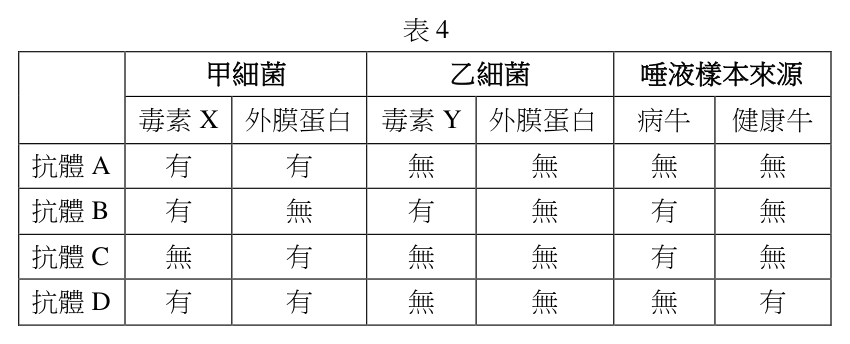

分科測驗生物歷屆試題
開卷有益收錄分科測驗「生物」民國 111–114 年的歷屆試題，共 4 份考卷、184 題，其中 184 題附有逐題詳解。每一份考卷都有獨立頁面，可以整卷看題目與答案，也可以直接線上作答。
線上練習 生物 →
本科概況
| 科目 | 生物（分科測驗） |
|---|
| 題數 | 184 題 |
|---|
| 考卷份數 | 4 份 |
|---|
| 涵蓋年份 | 民國 111–114 年 |
|---|
| 詳解 | 184 題（100%） |
|---|
| 資料來源 | 大考中心 分科測驗歷年試題（依著作權法 §9，考試試題不受著作權保護） |
|---|
| 費用 | 免費，不需註冊，無廣告 |
|---|
細胞與遺傳、生理、生態演化，閱讀題組占比高。
歷年考卷（4 份）
點任一年度可看整份試題與標準答案。
題目長什麼樣
以下自本科題庫抽 5 題示例，完整題目請看上方各年度考卷。
第 1 題
抗體主要由何種單體分子脫水聚合而成?
- （A）磷脂質
- （B）胺基酸
- （C）脂肪酸
- （D）單醣
答案：（B）
詳解與考點
正解：抗體是免疫球蛋白，屬於蛋白質；蛋白質由胺基酸之間脫水形成胜肽鍵，連結成多胜肽鏈後再摺疊成具有辨識功能的抗體，故選 B。
A：磷脂質是細胞膜的重要成分，主要由甘油、脂肪酸與磷酸相關基團組成，不是蛋白質的單體。
C：脂肪酸可參與形成三酸甘油酯或磷脂質；它不會以胜肽鍵聚合成抗體。
D：單醣可脫水聚合成多醣，例如澱粉或肝醣；抗體的主鏈則是胺基酸組成。
本題考點：蛋白質（protein）——看到酵素、抗體或受體等大分子時，先判斷其基本單體為胺基酸；脫水合成（dehydration synthesis）——胺基酸脫去水分子形成胜肽鍵，連成多胜肽；免疫球蛋白（immunoglobulin）——抗體的專一性來自蛋白質立體構形，不是脂質或醣類聚合物。
第 37 題
上述檢測法是利用後天性免疫的何種特性?(2分)

本題選項為上圖中的 A／B／C／D，請對照圖片作答。
標準答案未收錄
詳解與考點
正解：題組要求用抗體把甲細菌與乙細菌分開，關鍵條件是只結合甲細菌的特定抗原、對乙細菌不產生交叉反應。這種抗原與抗體相互辨識的選擇性，就是後天性免疫的專一性，故選「專一性」。
本題考點：後天性免疫的專一性（specificity）——判斷檢測法時，看抗體是否只辨認目標抗原；抗原—抗體結合（antigen-antibody binding）——能結合不等於能診斷，還要排除與非目標抗原的交叉反應。
第 25 題
下列關於SNP的敘述,何者正確?

- （A）SNP 不會出現於「編碼DNA」中,而改變蛋白質
- （B）SNP 其形成原因通常為染色體大片斷缺失,這樣的變異影響該基因型的表現
- （C）SNP 的基因多樣性是自然現象,不適合用於人類疾病相關研究
- （D）在育種時,可利用SNP 以建立品系資料
答案：（D）
詳解與考點
正解：SNP 是基因組中特定位置的一個核苷酸差異，可作為個體或品系的遺傳標記。育種時可比較大量 SNP 的型態來建立品系資料、追蹤遺傳背景或輔助選拔，因此（D）正確。故選 D。
A：SNP 可以位於編碼 DNA 中；若改變密碼子，可能改變胺基酸與蛋白質，也可能是同義替換。
B：SNP 指的是單一核苷酸位置的變異，不是染色體大片段缺失。
C：SNP 的自然多型性正可用於族群遺傳、性狀關聯與疾病相關研究，並非不適合研究。
本題考點：單核苷酸多型性（single nucleotide polymorphism, SNP）——看到單一位置的鹼基差異時，以 SNP 判讀，不要誤認成大片段染色體變異；分子標記（molecular marker）——育種與疾病研究可用標記比較遺傳差異，但標記本身不必直接造成性狀。
第 14 題（多選）
一胜肽鏈的序列為Met-Phe-Ser-Tyr-Cys-Arg,從胜肽鏈的合成開始到結束,下列哪些分
子會出現在核糖體的A位?
- （A）帶有Ser胺基酸的tRNA
- （B）不帶有胺基酸的tRNA
- （C）帶有Gln胺基酸的tRNA
- （D）帶有胜肽鏈Tyr-Cys的tRNA
- （E）帶有胜肽鏈Met-Phe-Ser-Tyr-Cys的tRNA
答案：（A）（E）
詳解與考點
正解：A 位接收下一個胺醯 tRNA。序列 Met-Phe-Ser-Tyr-Cys-Arg 中，帶 Ser 的 tRNA 會進入 A 位；帶 Cys 的 tRNA 接上既有胜肽鏈後，帶 Met-Phe-Ser-Tyr-Cys 的 tRNA 仍在 A 位。故選 AE。
A：起始 Met-tRNA 在 P 位，Phe-tRNA、Ser-tRNA 依序進入 A 位，故帶 Ser 的 tRNA 會出現在 A 位。
E：帶 Cys 的 tRNA 進入 A 位並形成胜肽鍵後，攜帶完整的 Met-Phe-Ser-Tyr-Cys 鏈；轉位前仍位於 A 位。
B：去醯化 tRNA 轉位後從 P 位移至 E 位，不會進入 A 位。
C：題示胜肽序列沒有 Gln，帶 Gln 的 tRNA 不會進入 A 位。
D：成長胜肽須含有先前所有胺基酸；Tyr-Cys 片段不符合由 Met 起始的序列。
本題考點：核糖體 A、P、E 位（A/P/E sites）——A 位接收胺醯 tRNA、P 位持有成長胜肽鏈、E 位排出 tRNA；轉譯延長（translation elongation）——依序追蹤胺基酸，可判斷每次進入 A 位的 tRNA；轉位（translocation）——胜肽鍵形成後，帶胜肽的 tRNA 由 A 位移到 P 位。
第 5 題
法布瑞氏症是代謝異常造成的疾病。此病主要是因人體胞器中某一種分解大分子的酵
素發生缺陷,導致原應被分解的醣脂質,無法分解成小分子而被細胞再循環利用。下列
何者最可能是此症患者缺陷酵素存在的胞器?
- （A）內質網
- （B）粒線體
- （C）溶體
- （D）高基氏體
答案：（C）
詳解與考點
正解：題幹的關鍵是胞器內分解大分子的酵素缺陷，使醣脂質無法被拆解後再利用。溶體含有多種酸性水解酵素，負責分解細胞吞入或回收的物質，因此最可能是缺陷酵素所在的胞器。故選 C。
A：內質網主要參與蛋白質與脂質的合成、摺疊及運輸，並非細胞內分解醣脂質的主要場所。
B：粒線體以有氧呼吸與 ATP 生成為主要功能，不負責以水解酵素分解醣脂質。
D：高基氏體主要修飾、分類與運送蛋白質和脂質；分解大分子的水解反應主要在溶體中進行。
本題考點：溶體（lysosome）——看到胞內消化、酸性水解酵素或大分子分解時優先判斷；酸性水解酵素（acid hydrolase）——功能缺陷會造成受質在細胞內累積；胞器分工（organelle function）——以合成、能量轉換、修飾運輸與分解四類功能區分內質網、粒線體、高基氏體與溶體。
分科測驗其他科目
題目與標準答案出自大考中心 分科測驗歷年試題（依著作權法 §9，考試試題不受著作權保護），依《著作權法》第 9 條為非著作權標的，得自由利用；
本專案撰寫的詳解以 CC0 1.0 貢獻至公眾領域。詳解為 AI 整理的學習輔助，並非官方標準答案。